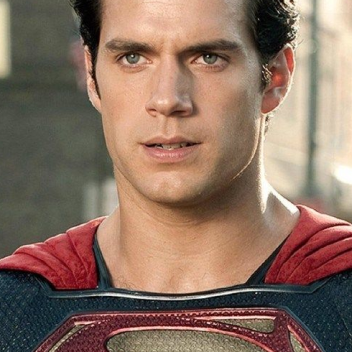

Batman
Batman
Bruce Wayne é o único personagem a se identificar como Batman e
aparece em Batman, Detective Comics, Batman e Robin e Batman: O
Cavaleiro das Trevas. Dick Grayson retorna ao manto de Asa
Noturna.
 Arlequina
Arlequina
A criação de Arlequina foi uma ideia de última hora proposta
pelo escritor americano Paul Dini para modificar uma cena do
vigésimo segundo episódio de Batman: The Animated Series.
 Mulher Maravilha
Mulher Maravilha
É uma super-heroína criada por William Moulton Marston para a
editora DC Comics. Ela é uma princesa guerreira das Amazonas,
uma cidade fictícia baseada nas Amazonas da mitologia grega. Em
sua terra natal, é conhecida como Princesa Diana de Themyscira,
mas fora disso ela usa a identidade secreta de Diana Prince.
Ver mais

Superman
É um super-herói que apareceu pela primeira vez nos quadrinhos
americanos publicados pela DC Comics. O personagem foi criado
pelo escritor americano Jerry Siegel e pelo artista canadense
Joe Shuster em 1933, quando ambos moravam em Cleveland, Ohio.
Ver mais